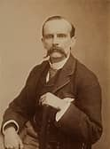

Lord Frederick Lugard

Frederick John Dealtry Lugard, 1st Baron Lugard GCMG CB DSO PC (22
January 1858 - 11 April 1945), known as Sir Frederick Lugard between
1901 and 1928, was a British soldier, mercenary, explorer of Africa
and a colonial administrator.
Frederick Lugard, 1st Baron Lugard was a British colonial administrator who served as Governor of Hong Kong, Governor of Northern Nigeria Protectorate, Governor of Southern Nigeria Protectorate, and Governor-General of Nigeria1. He created the West African Frontier Force in 1897 and by 1903 had subdued Northern Nigeria2. During his tenure, Lugard laid the foundations of British rule in the North, first establishing British sovereignty by conquest of the Moslem states which had resisted alien domination and then by developing the forms of administration whereby the British would rule
More about Lord Frederick Lugard